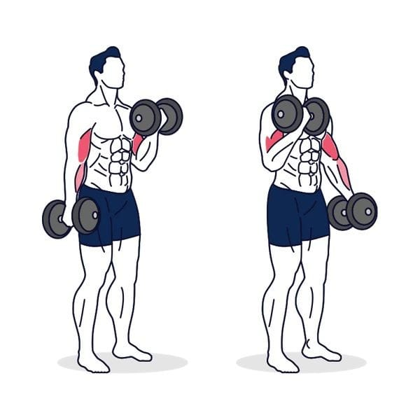
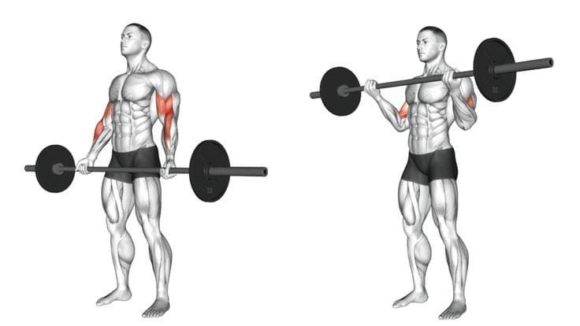
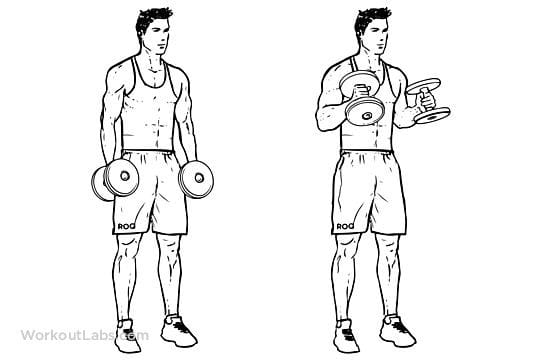
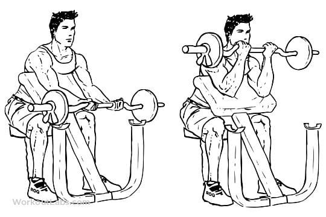
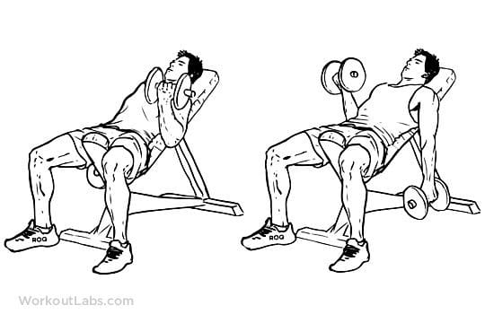

Bicep Dumbbell Curl

To do a biceps curl with a dumbbell, hold a dumbbell with your palm facing upward. Slowly curl the weight up by bending your elbow, keeping your elbow close to your body. Then slowly lower the weight to the starting position. You'll feel tension in the muscles in the front of your upper arm.
When you're doing biceps curls, don't swing your arm or elbow. Be careful to keep your wrist straight and rigid. If you flex your wrist as you bend your elbow, you won't target the biceps muscle effectively and you may hurt your elbow.
You can do biceps curls while you're standing or sitting. You can also work both biceps by alternating arms during the exercise. This also provides a core and stability challenge.
For most people, one set of 12 to 15 repetitions is adequate.
Remember, for best results, keep your wrist straight and rigid during the exercise. It's also important to keep your movements smooth and controlled.
Barbell curl

For the barbell curl, begin by using a weight that you can control for 2–3 sets of 8–12 repetitions. Choose a weight that allows you to maintain good technique throughout all sets and repetitions.
Hammer Curl

While standing or sitting, hold dumbbells at your sides with your palms facing each other.
Keep your back straight and your elbows against your sides.
Bend your elbows, bringing the dumbbells up toward your shoulders while keeping your upper arms in line with your trunk. Your palms will stay facing each other.
Pause for a 1–2 count, and then slowly lower the dumbbells back to the starting position at your sides.
Perform 2–3 sets of 8–15 repetitions.
Preacher curl

For preacher curls, begin by performing 2–3 sets of 8–12 repetitions. Choose your sets and repetitions based on your ability to maintain good technique throughout all sets and repetitions.
Grab the barbell or EZ curl bar with an underhand grip, and sit down on the preacher curl bench with your feet flat on the floor. Adjust the seat to allow your upper arms and chest to be in contact with the arm pad.
Your chin should remain tucked throughout the movement, as if you were holding an egg under your chin. Your arms should be long with a slight bend in your elbows. Maintain a neutral wrist position and a comfortable grip. All repetitions should begin from this position.
While keeping your upper arms in contact with the arm pad, initiate the upward movement by squeezing your biceps and bending your elbows. Continue to lift until the barbell or EZ bar is level with your shoulders.
Finish the movement by squeezing your biceps.
Slowly straighten your elbows to lower the barbell to the starting position.
Alternative incline Dumbbell Curl

Set up for the alternate incline dumbbell curl by setting the bench at a 30-45 degree incline and sitting a pair of dumbbells at the end. The lower the incline, the more challenging the exercise will be so 30 degrees is preferred.
Sit on the bench, pick up the dumbbells and lay back with your back flat on the padding.
You should be holding the dumbbells with an underhand grip, palms facing up.
Take up the slack in your arms by slightly bending them. This will put tension on the biceps. This is the starting position for the exercise.
Keeping your elbows fixed, slowly curl up the dumbbell in your weakest arm.
Squeeze the bicep at the top of the movement, then slowly lower back to the starting position.
Repeat for your other arm, and then repeat for desired reps.